This is an R Markdown document. Markdown is a simple formatting syntax for authoring HTML, PDF, and MS Word documents. For more details on using R Markdown see http://rmarkdown.rstudio.com.
When you click the Knit button a document will be generated that includes both content as well as the output of any embedded R code chunks within the document. You can embed an R code chunk like this:
library(tidyverse)## ── Attaching core tidyverse packages ──────────────────────── tidyverse 2.0.0 ──
## ✔ dplyr 1.1.4 ✔ readr 2.1.4
## ✔ forcats 1.0.0 ✔ stringr 1.5.1
## ✔ ggplot2 3.4.4 ✔ tibble 3.2.1
## ✔ lubridate 1.9.3 ✔ tidyr 1.3.0
## ✔ purrr 1.0.2
## ── Conflicts ────────────────────────────────────────── tidyverse_conflicts() ──
## ✖ dplyr::filter() masks stats::filter()
## ✖ dplyr::lag() masks stats::lag()
## ℹ Use the conflicted package (<http://conflicted.r-lib.org/>) to force all conflicts to become errorslibrary(dplyr)
library(stringr)
library(ggplot2)
#connecting to the dataset - employee dataset provided for this project
#It looks like the Yes/No values of Attrition were changed to -2 and -1 on AWS, so using a local copy
attrition <- read.csv("https://s3.us-east-2.amazonaws.com/msdsds6306/CaseStudy2-data.csv"
,header=TRUE, stringsAsFactors = TRUE)
#connecting to the dataset - employee dataset provided for this project
#attrition <- read.csv(file.choose(),header=TRUE, stringsAsFactors = TRUE)
#connecting to the dataset - employee with no salary data provided for this project
NoSalary <- read.csv("https://s3.us-east-2.amazonaws.com/msdsds6306/CaseStudy2CompSet%20No%20Salary.csv"
,header=TRUE, stringsAsFactors = TRUE)
#connecting to the dataset - employee with no salary data provided for this project
NoAttrition <- read.csv("https://s3.us-east-2.amazonaws.com/msdsds6306/CaseStudy2CompSet%20No%20Attrition.csv"
,header=TRUE, stringsAsFactors = TRUE)
#create a new column overall satisfaction = median of job involvement, relationship satisfaction and job satisfaction
NoAttrition$OverallSatisfaction <- median(c(NoAttrition$JobInvolvement,NoAttrition$JobSatisfaction,NoAttrition$RelationshipSatisfaction))
# Create a new column based on the values of "BusinessTravel" - convert to numeric
NoAttrition$TravelFrequency <- ifelse(NoAttrition$BusinessTravel == "Non-Travel", 3,
ifelse(attrition$BusinessTravel == "Travel_Rarely", 2, 1))
#check data
head(attrition)## ID Age Attrition BusinessTravel DailyRate Department
## 1 1 32 No Travel_Rarely 117 Sales
## 2 2 40 No Travel_Rarely 1308 Research & Development
## 3 3 35 No Travel_Frequently 200 Research & Development
## 4 4 32 No Travel_Rarely 801 Sales
## 5 5 24 No Travel_Frequently 567 Research & Development
## 6 6 27 No Travel_Frequently 294 Research & Development
## DistanceFromHome Education EducationField EmployeeCount EmployeeNumber
## 1 13 4 Life Sciences 1 859
## 2 14 3 Medical 1 1128
## 3 18 2 Life Sciences 1 1412
## 4 1 4 Marketing 1 2016
## 5 2 1 Technical Degree 1 1646
## 6 10 2 Life Sciences 1 733
## EnvironmentSatisfaction Gender HourlyRate JobInvolvement JobLevel
## 1 2 Male 73 3 2
## 2 3 Male 44 2 5
## 3 3 Male 60 3 3
## 4 3 Female 48 3 3
## 5 1 Female 32 3 1
## 6 4 Male 32 3 3
## JobRole JobSatisfaction MaritalStatus MonthlyIncome
## 1 Sales Executive 4 Divorced 4403
## 2 Research Director 3 Single 19626
## 3 Manufacturing Director 4 Single 9362
## 4 Sales Executive 4 Married 10422
## 5 Research Scientist 4 Single 3760
## 6 Manufacturing Director 1 Divorced 8793
## MonthlyRate NumCompaniesWorked Over18 OverTime PercentSalaryHike
## 1 9250 2 Y No 11
## 2 17544 1 Y No 14
## 3 19944 2 Y No 11
## 4 24032 1 Y No 19
## 5 17218 1 Y Yes 13
## 6 4809 1 Y No 21
## PerformanceRating RelationshipSatisfaction StandardHours StockOptionLevel
## 1 3 3 80 1
## 2 3 1 80 0
## 3 3 3 80 0
## 4 3 3 80 2
## 5 3 3 80 0
## 6 4 3 80 2
## TotalWorkingYears TrainingTimesLastYear WorkLifeBalance YearsAtCompany
## 1 8 3 2 5
## 2 21 2 4 20
## 3 10 2 3 2
## 4 14 3 3 14
## 5 6 2 3 6
## 6 9 4 2 9
## YearsInCurrentRole YearsSinceLastPromotion YearsWithCurrManager
## 1 2 0 3
## 2 7 4 9
## 3 2 2 2
## 4 10 5 7
## 5 3 1 3
## 6 7 1 7head(NoSalary)## ID Age Attrition BusinessTravel DailyRate Department
## 1 871 43 No Travel_Frequently 1422 Sales
## 2 872 33 No Travel_Rarely 461 Research & Development
## 3 873 55 Yes Travel_Rarely 267 Sales
## 4 874 36 No Non-Travel 1351 Research & Development
## 5 875 27 No Travel_Rarely 1302 Research & Development
## 6 876 39 Yes Travel_Rarely 895 Sales
## DistanceFromHome Education EducationField EmployeeCount EmployeeNumber
## 1 2 4 Life Sciences 1 1849
## 2 13 1 Life Sciences 1 995
## 3 13 4 Marketing 1 1372
## 4 9 4 Life Sciences 1 1949
## 5 19 3 Other 1 1619
## 6 5 3 Technical Degree 1 42
## EnvironmentSatisfaction Gender HourlyRate JobInvolvement JobLevel
## 1 1 Male 92 3 2
## 2 2 Female 53 3 1
## 3 1 Male 85 4 4
## 4 1 Male 66 4 1
## 5 4 Male 67 2 1
## 6 4 Male 56 3 2
## JobRole JobSatisfaction MaritalStatus MonthlyRate
## 1 Sales Executive 4 Married 19246
## 2 Research Scientist 4 Single 17241
## 3 Sales Executive 3 Single 9277
## 4 Laboratory Technician 2 Married 9238
## 5 Laboratory Technician 1 Divorced 16290
## 6 Sales Representative 4 Married 3335
## NumCompaniesWorked Over18 OverTime PercentSalaryHike PerformanceRating
## 1 1 Y No 20 4
## 2 3 Y No 18 3
## 3 6 Y Yes 17 3
## 4 1 Y No 22 4
## 5 1 Y No 11 3
## 6 3 Y No 14 3
## RelationshipSatisfaction StandardHours StockOptionLevel TotalWorkingYears
## 1 3 80 1 7
## 2 1 80 0 5
## 3 3 80 0 24
## 4 2 80 0 5
## 5 1 80 2 7
## 6 3 80 1 19
## TrainingTimesLastYear WorkLifeBalance YearsAtCompany YearsInCurrentRole
## 1 5 3 7 7
## 2 4 3 3 2
## 3 2 2 19 7
## 4 3 3 5 4
## 5 3 3 7 7
## 6 6 4 1 0
## YearsSinceLastPromotion YearsWithCurrManager
## 1 7 7
## 2 0 2
## 3 3 8
## 4 0 2
## 5 0 7
## 6 0 0head(NoAttrition)## ID Age BusinessTravel DailyRate Department DistanceFromHome
## 1 1171 35 Travel_Rarely 750 Research & Development 28
## 2 1172 33 Travel_Rarely 147 Human Resources 2
## 3 1173 26 Travel_Rarely 1330 Research & Development 21
## 4 1174 55 Travel_Rarely 1311 Research & Development 2
## 5 1175 29 Travel_Rarely 1246 Sales 19
## 6 1176 51 Travel_Frequently 1456 Research & Development 1
## Education EducationField EmployeeCount EmployeeNumber
## 1 3 Life Sciences 1 1596
## 2 3 Human Resources 1 1207
## 3 3 Medical 1 1107
## 4 3 Life Sciences 1 505
## 5 3 Life Sciences 1 1497
## 6 4 Medical 1 145
## EnvironmentSatisfaction Gender HourlyRate JobInvolvement JobLevel
## 1 2 Male 46 4 2
## 2 2 Male 99 3 1
## 3 1 Male 37 3 1
## 4 3 Female 97 3 4
## 5 3 Male 77 2 2
## 6 1 Female 30 2 3
## JobRole JobSatisfaction MaritalStatus MonthlyIncome
## 1 Laboratory Technician 3 Married 3407
## 2 Human Resources 3 Married 3600
## 3 Laboratory Technician 3 Divorced 2377
## 4 Manager 4 Single 16659
## 5 Sales Executive 3 Divorced 8620
## 6 Healthcare Representative 1 Single 7484
## MonthlyRate NumCompaniesWorked Over18 OverTime PercentSalaryHike
## 1 25348 1 Y No 17
## 2 8429 1 Y No 13
## 3 19373 1 Y No 20
## 4 23258 2 Y Yes 13
## 5 23757 1 Y No 14
## 6 25796 3 Y No 20
## PerformanceRating RelationshipSatisfaction StandardHours StockOptionLevel
## 1 3 4 80 2
## 2 3 4 80 1
## 3 4 3 80 1
## 4 3 3 80 0
## 5 3 3 80 2
## 6 4 3 80 0
## TotalWorkingYears TrainingTimesLastYear WorkLifeBalance YearsAtCompany
## 1 10 3 2 10
## 2 5 2 3 5
## 3 1 0 2 1
## 4 30 2 3 5
## 5 10 3 3 10
## 6 23 1 2 13
## YearsInCurrentRole YearsSinceLastPromotion YearsWithCurrManager
## 1 9 6 8
## 2 4 1 4
## 3 1 0 0
## 4 4 1 2
## 5 7 0 4
## 6 12 12 8
## OverallSatisfaction TravelFrequency
## 1 3 2
## 2 3 2
## 3 3 1
## 4 3 2
## 5 3 1
## 6 3 1summary(attrition)## ID Age Attrition BusinessTravel
## Min. : 1.0 Min. :18.00 No :730 Non-Travel : 94
## 1st Qu.:218.2 1st Qu.:30.00 Yes:140 Travel_Frequently:158
## Median :435.5 Median :35.00 Travel_Rarely :618
## Mean :435.5 Mean :36.83
## 3rd Qu.:652.8 3rd Qu.:43.00
## Max. :870.0 Max. :60.00
##
## DailyRate Department DistanceFromHome Education
## Min. : 103.0 Human Resources : 35 Min. : 1.000 Min. :1.000
## 1st Qu.: 472.5 Research & Development:562 1st Qu.: 2.000 1st Qu.:2.000
## Median : 817.5 Sales :273 Median : 7.000 Median :3.000
## Mean : 815.2 Mean : 9.339 Mean :2.901
## 3rd Qu.:1165.8 3rd Qu.:14.000 3rd Qu.:4.000
## Max. :1499.0 Max. :29.000 Max. :5.000
##
## EducationField EmployeeCount EmployeeNumber EnvironmentSatisfaction
## Human Resources : 15 Min. :1 Min. : 1.0 Min. :1.000
## Life Sciences :358 1st Qu.:1 1st Qu.: 477.2 1st Qu.:2.000
## Marketing :100 Median :1 Median :1039.0 Median :3.000
## Medical :270 Mean :1 Mean :1029.8 Mean :2.701
## Other : 52 3rd Qu.:1 3rd Qu.:1561.5 3rd Qu.:4.000
## Technical Degree: 75 Max. :1 Max. :2064.0 Max. :4.000
##
## Gender HourlyRate JobInvolvement JobLevel
## Female:354 Min. : 30.00 Min. :1.000 Min. :1.000
## Male :516 1st Qu.: 48.00 1st Qu.:2.000 1st Qu.:1.000
## Median : 66.00 Median :3.000 Median :2.000
## Mean : 65.61 Mean :2.723 Mean :2.039
## 3rd Qu.: 83.00 3rd Qu.:3.000 3rd Qu.:3.000
## Max. :100.00 Max. :4.000 Max. :5.000
##
## JobRole JobSatisfaction MaritalStatus MonthlyIncome
## Sales Executive :200 Min. :1.000 Divorced:191 Min. : 1081
## Research Scientist :172 1st Qu.:2.000 Married :410 1st Qu.: 2840
## Laboratory Technician :153 Median :3.000 Single :269 Median : 4946
## Manufacturing Director : 87 Mean :2.709 Mean : 6390
## Healthcare Representative: 76 3rd Qu.:4.000 3rd Qu.: 8182
## Sales Representative : 53 Max. :4.000 Max. :19999
## (Other) :129
## MonthlyRate NumCompaniesWorked Over18 OverTime PercentSalaryHike
## Min. : 2094 Min. :0.000 Y:870 No :618 Min. :11.0
## 1st Qu.: 8092 1st Qu.:1.000 Yes:252 1st Qu.:12.0
## Median :14074 Median :2.000 Median :14.0
## Mean :14326 Mean :2.728 Mean :15.2
## 3rd Qu.:20456 3rd Qu.:4.000 3rd Qu.:18.0
## Max. :26997 Max. :9.000 Max. :25.0
##
## PerformanceRating RelationshipSatisfaction StandardHours StockOptionLevel
## Min. :3.000 Min. :1.000 Min. :80 Min. :0.0000
## 1st Qu.:3.000 1st Qu.:2.000 1st Qu.:80 1st Qu.:0.0000
## Median :3.000 Median :3.000 Median :80 Median :1.0000
## Mean :3.152 Mean :2.707 Mean :80 Mean :0.7839
## 3rd Qu.:3.000 3rd Qu.:4.000 3rd Qu.:80 3rd Qu.:1.0000
## Max. :4.000 Max. :4.000 Max. :80 Max. :3.0000
##
## TotalWorkingYears TrainingTimesLastYear WorkLifeBalance YearsAtCompany
## Min. : 0.00 Min. :0.000 Min. :1.000 Min. : 0.000
## 1st Qu.: 6.00 1st Qu.:2.000 1st Qu.:2.000 1st Qu.: 3.000
## Median :10.00 Median :3.000 Median :3.000 Median : 5.000
## Mean :11.05 Mean :2.832 Mean :2.782 Mean : 6.962
## 3rd Qu.:15.00 3rd Qu.:3.000 3rd Qu.:3.000 3rd Qu.:10.000
## Max. :40.00 Max. :6.000 Max. :4.000 Max. :40.000
##
## YearsInCurrentRole YearsSinceLastPromotion YearsWithCurrManager
## Min. : 0.000 Min. : 0.000 Min. : 0.00
## 1st Qu.: 2.000 1st Qu.: 0.000 1st Qu.: 2.00
## Median : 3.000 Median : 1.000 Median : 3.00
## Mean : 4.205 Mean : 2.169 Mean : 4.14
## 3rd Qu.: 7.000 3rd Qu.: 3.000 3rd Qu.: 7.00
## Max. :18.000 Max. :15.000 Max. :17.00
## #create a new column overall satisfaction = median of job involvement, relationship satisfaction and job satisfaction
attrition$OverallSatisfaction <- median(c(attrition$JobInvolvement,attrition$JobSatisfaction,attrition$RelationshipSatisfaction))
#check data
head(attrition)## ID Age Attrition BusinessTravel DailyRate Department
## 1 1 32 No Travel_Rarely 117 Sales
## 2 2 40 No Travel_Rarely 1308 Research & Development
## 3 3 35 No Travel_Frequently 200 Research & Development
## 4 4 32 No Travel_Rarely 801 Sales
## 5 5 24 No Travel_Frequently 567 Research & Development
## 6 6 27 No Travel_Frequently 294 Research & Development
## DistanceFromHome Education EducationField EmployeeCount EmployeeNumber
## 1 13 4 Life Sciences 1 859
## 2 14 3 Medical 1 1128
## 3 18 2 Life Sciences 1 1412
## 4 1 4 Marketing 1 2016
## 5 2 1 Technical Degree 1 1646
## 6 10 2 Life Sciences 1 733
## EnvironmentSatisfaction Gender HourlyRate JobInvolvement JobLevel
## 1 2 Male 73 3 2
## 2 3 Male 44 2 5
## 3 3 Male 60 3 3
## 4 3 Female 48 3 3
## 5 1 Female 32 3 1
## 6 4 Male 32 3 3
## JobRole JobSatisfaction MaritalStatus MonthlyIncome
## 1 Sales Executive 4 Divorced 4403
## 2 Research Director 3 Single 19626
## 3 Manufacturing Director 4 Single 9362
## 4 Sales Executive 4 Married 10422
## 5 Research Scientist 4 Single 3760
## 6 Manufacturing Director 1 Divorced 8793
## MonthlyRate NumCompaniesWorked Over18 OverTime PercentSalaryHike
## 1 9250 2 Y No 11
## 2 17544 1 Y No 14
## 3 19944 2 Y No 11
## 4 24032 1 Y No 19
## 5 17218 1 Y Yes 13
## 6 4809 1 Y No 21
## PerformanceRating RelationshipSatisfaction StandardHours StockOptionLevel
## 1 3 3 80 1
## 2 3 1 80 0
## 3 3 3 80 0
## 4 3 3 80 2
## 5 3 3 80 0
## 6 4 3 80 2
## TotalWorkingYears TrainingTimesLastYear WorkLifeBalance YearsAtCompany
## 1 8 3 2 5
## 2 21 2 4 20
## 3 10 2 3 2
## 4 14 3 3 14
## 5 6 2 3 6
## 6 9 4 2 9
## YearsInCurrentRole YearsSinceLastPromotion YearsWithCurrManager
## 1 2 0 3
## 2 7 4 9
## 3 2 2 2
## 4 10 5 7
## 5 3 1 3
## 6 7 1 7
## OverallSatisfaction
## 1 3
## 2 3
## 3 3
## 4 3
## 5 3
## 6 3#Question 1 - How many employees are male vs. female?
# Create a bar plot showing the count of employees by gender
library(ggplot2)
ggplot(attrition, aes(x = Gender, fill = Attrition)) +
geom_bar() +
labs(x = "Gender", y = "Number of Employees", title = "Number of Employees by Gender")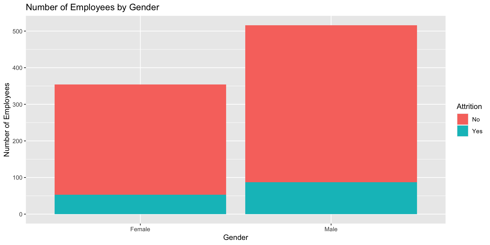
#Question 2 - How many employees are excempt vs. non-exempt?
# Create a bar plot showing the count of employees by overtime
library(ggplot2)
ggplot(attrition, aes(x = OverTime, fill = Attrition)) +
geom_bar() +
labs(x = "OverTime", y = "Number of Employees", title = "Number of Employees by Exempt Status")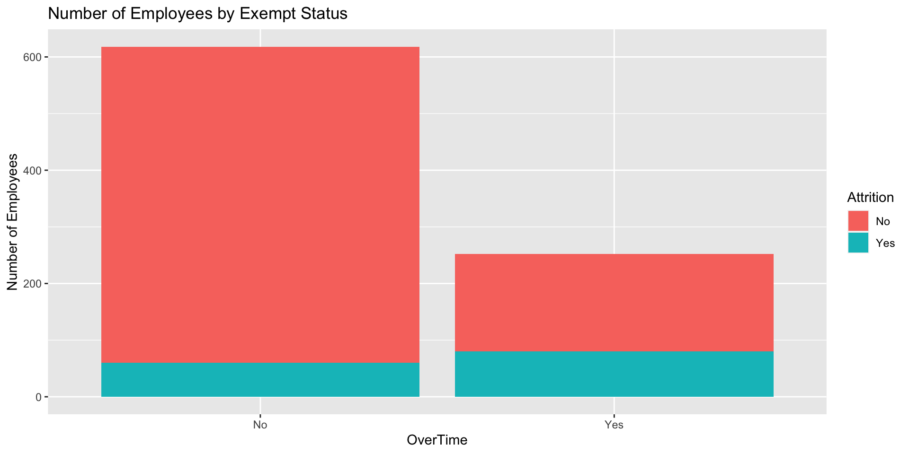
#Question 3 - What is the relationship between job satisfaction and relationship satisfaction?
#draw scatterplot
library(ggplot2)
attrition %>% select(Department,Gender,OverTime,JobSatisfaction,RelationshipSatisfaction,MonthlyIncome) %>%
ggplot(aes(x= JobSatisfaction, y= RelationshipSatisfaction,color = Gender))+
geom_point()+labs(title = "Scatterplot of RelationshipSatisfaction Vs. JobSatisfaction by OverTime", x= "Job Satisfaction", y= "Relationship Satisfaction") +
facet_wrap(~ OverTime)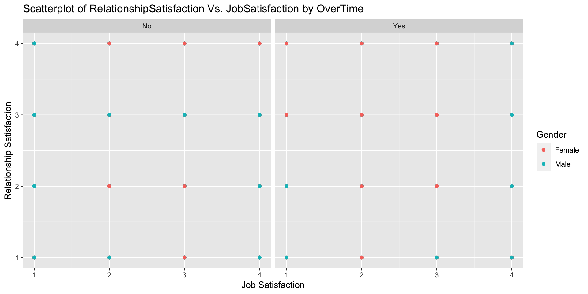
#Question 3b - business travel
library(ggplot2)
ggplot(attrition, aes(x = BusinessTravel, fill = Attrition)) +
geom_bar() +
labs(x = "Business Travel", y = "Number of Employees", title = "Number of Employees who travel for business") +
facet_wrap(~ Department)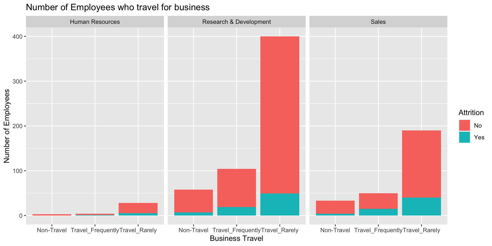
#Question 3c - Monthly Income
library(ggplot2)
ggplot(attrition, aes(x = JobRole,y = MonthlyIncome,fill = Attrition)) +
geom_boxplot() +
labs(x = "Job role", y = "Monthly Income", title = "Monthly Income by Job Role")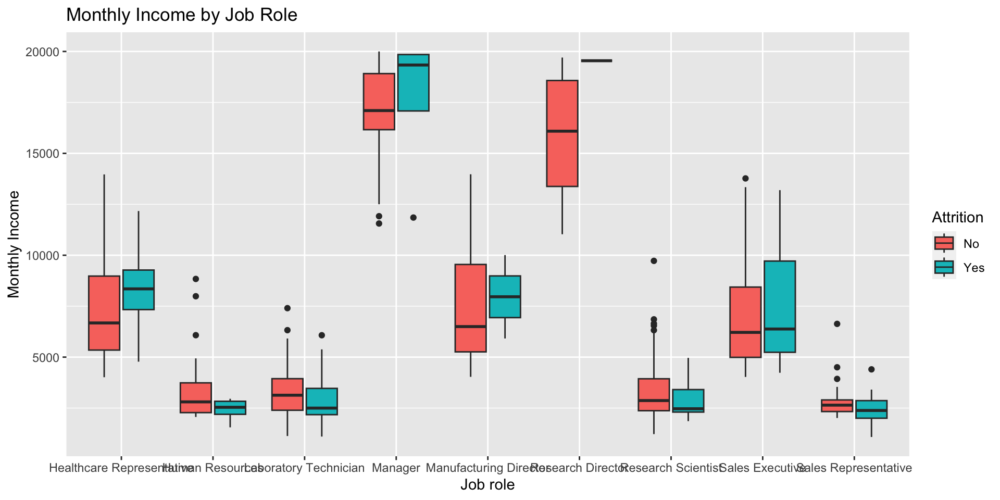
#Question 3d - Monthly Income
library(ggplot2)
ggplot(attrition, aes(x = MaritalStatus,y = MonthlyIncome,fill = Attrition)) +
geom_boxplot() +
labs(x = "MaritalStatus", y = "Monthly Income", title = "Monthly Income by Marital Status")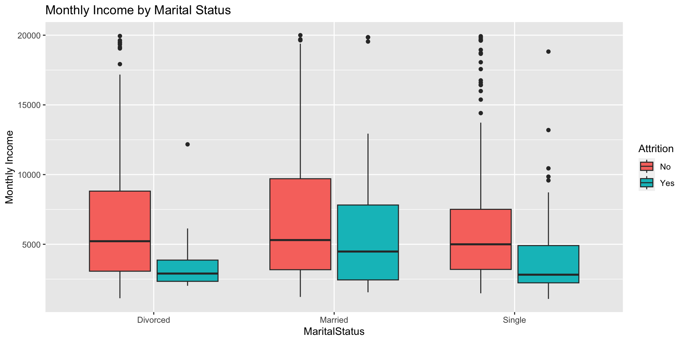
#Question 3e - Job Satisfaction
library(ggplot2)
ggplot(attrition, aes(x = JobRole,y = JobSatisfaction)) +
geom_boxplot() +
labs(x = "Job role", y = "Job Satisfaction", title = "Job Satisfaction by Job Role")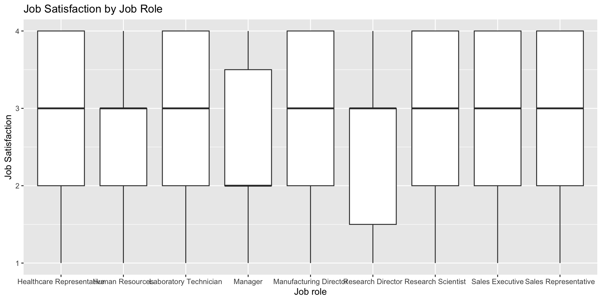
#draw scatterplot
library(ggplot2)
attrition %>% select(Department,Gender,OverTime,JobSatisfaction,RelationshipSatisfaction,MonthlyIncome) %>%
ggplot(aes(x= JobSatisfaction, y= RelationshipSatisfaction,color = OverTime))+
geom_point()+labs(title = "Scatterplot of RelationshipSatisfaction Vs. JobSatisfaction by Department", x= "Job Satisfaction", y= "Relationship Satisfaction") +
facet_wrap(~ Department)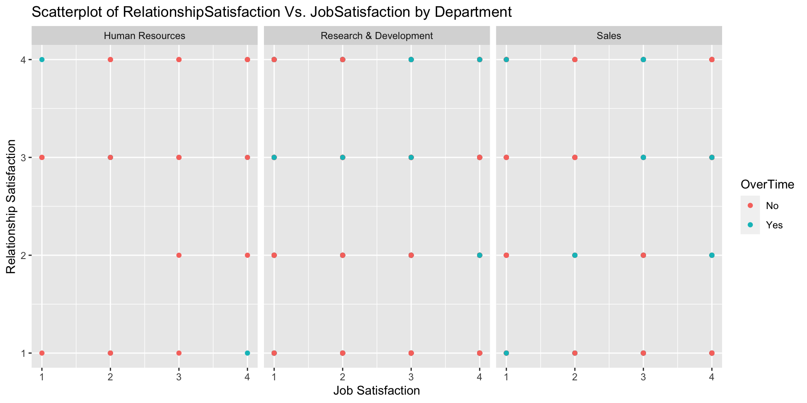
#Question 4 - What is the relationship between job satisfaction and Monthly Income?
#draw scatterplot
library(ggplot2)
attrition %>% select(Department,Gender,OverTime,JobSatisfaction,RelationshipSatisfaction,MonthlyIncome) %>%
ggplot(aes(x= MonthlyIncome , y= JobSatisfaction,color = Gender))+
geom_point()+labs(title = "Scatterplot of Job Satisfaction Vs. Monthly Income by overtime", x= "Monthly Income", y= "Job Satisfaction") +
facet_wrap(~ OverTime)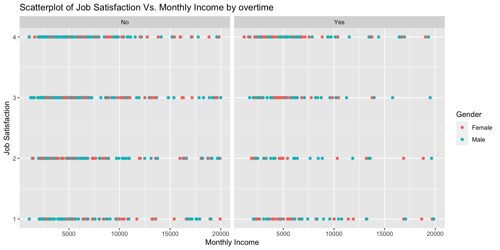
#remove columns that only have one value
attritionfilter <- select(attrition, -Over18,-StandardHours, -EmployeeCount)
#Question 5 - What is the relationship between total working years, percent salary hike?
#draw scatterplot
library(ggplot2)
attritionfilter %>% select(TotalWorkingYears,PercentSalaryHike,PerformanceRating,Attrition) %>%
ggplot(aes(x= TotalWorkingYears , y= PercentSalaryHike ,color = PerformanceRating))+
geom_point()+labs(title = "Scatterplot of Total Working Years Vs. Percent salary hike with Attrition", x= "Total Working Years", y= "% Salary Hike") +
facet_wrap(~ Attrition)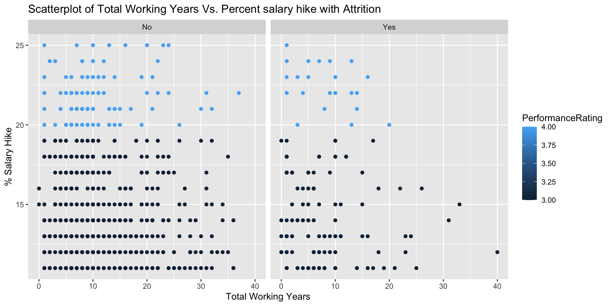
#Question 6 - What is the relationship between total working years, percent salary hike with respect to Attrition?
#draw scatterplot
library(ggplot2)
attritionfilter %>%
select(TotalWorkingYears, PercentSalaryHike, PerformanceRating, Department, Attrition) %>%
ggplot(aes(x = TotalWorkingYears, y = PercentSalaryHike, color = Attrition)) +
geom_point() +
labs(title = "Scatterplot of Total Working Years Vs. Percent salary hike by Department", x = "Total Working Years", y = "% Salary Hike") +
scale_color_manual(values = c("No" = "lightblue", "Yes" = "red")) +
facet_wrap(~Department)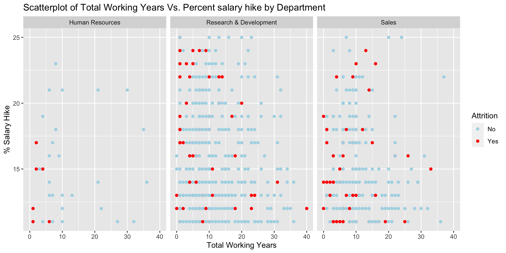
#draw scatterplot
library(ggplot2)
attritionfilter %>%
select(TotalWorkingYears, PercentSalaryHike, PerformanceRating, Department, JobRole,Attrition) %>%
ggplot(aes(x = TotalWorkingYears, y = PercentSalaryHike, color = Attrition)) +
geom_point() +
labs(title = "Scatterplot of Total Working Years Vs. Percent salary hike by Job Role", x = "Total Working Years", y = "% Salary Hike") +
scale_color_manual(values = c("No" = "lightblue", "Yes" = "red")) +
facet_wrap(~JobRole)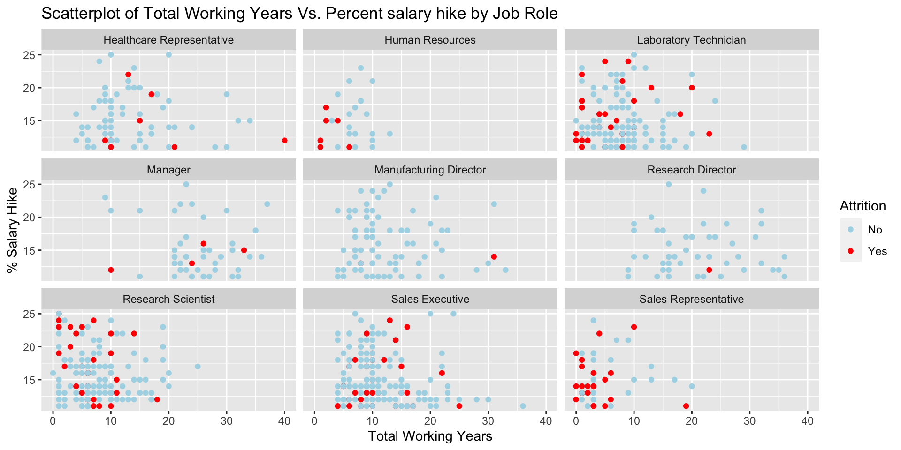
#Question 7 - What is the relationship between years in the company and years since last promotion with respect to Attrition?
#draw scatterplot
library(ggplot2)
attritionfilter %>%
ggplot(aes(x = YearsAtCompany, y = YearsSinceLastPromotion, color = Attrition)) +
geom_point() +
labs(title = "Scatterplot of Years at Company vs. Years since last promotion", x = "Years at Company", y = "Years since last promotion") +
scale_color_manual(values = c("No" = "blue", "Yes" = "red")) +
facet_wrap(~Department)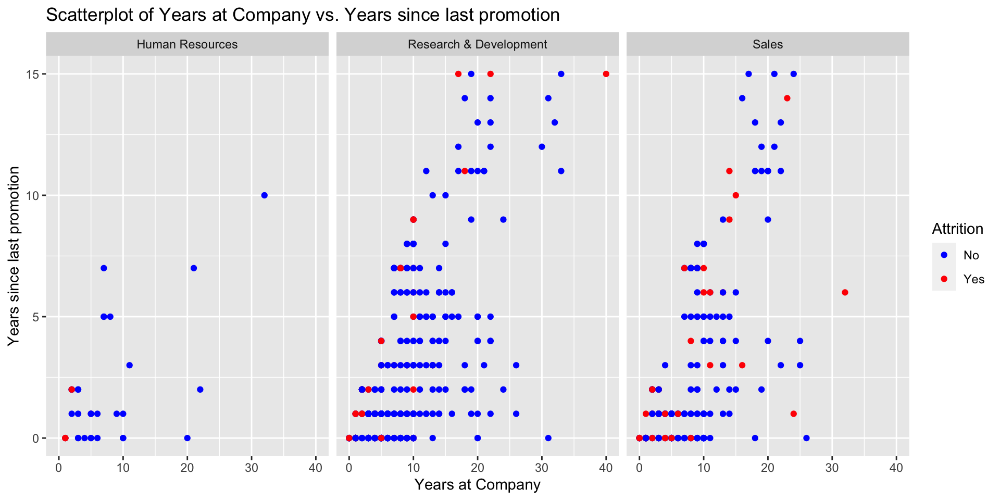
#Question 8
#test hypothesis that sales roles are more likely to leave the company than other roles
#Null hypothesis - No difference in attrition rate between Sales and Non-Sales employee group
# Convert Attrition to numeric
attrition$AttritionNumeric <- as.numeric(attrition$Attrition) - 1 # Assuming "No" is coded as 0 and "Yes" is coded as 1
head(attrition)## ID Age Attrition BusinessTravel DailyRate Department
## 1 1 32 No Travel_Rarely 117 Sales
## 2 2 40 No Travel_Rarely 1308 Research & Development
## 3 3 35 No Travel_Frequently 200 Research & Development
## 4 4 32 No Travel_Rarely 801 Sales
## 5 5 24 No Travel_Frequently 567 Research & Development
## 6 6 27 No Travel_Frequently 294 Research & Development
## DistanceFromHome Education EducationField EmployeeCount EmployeeNumber
## 1 13 4 Life Sciences 1 859
## 2 14 3 Medical 1 1128
## 3 18 2 Life Sciences 1 1412
## 4 1 4 Marketing 1 2016
## 5 2 1 Technical Degree 1 1646
## 6 10 2 Life Sciences 1 733
## EnvironmentSatisfaction Gender HourlyRate JobInvolvement JobLevel
## 1 2 Male 73 3 2
## 2 3 Male 44 2 5
## 3 3 Male 60 3 3
## 4 3 Female 48 3 3
## 5 1 Female 32 3 1
## 6 4 Male 32 3 3
## JobRole JobSatisfaction MaritalStatus MonthlyIncome
## 1 Sales Executive 4 Divorced 4403
## 2 Research Director 3 Single 19626
## 3 Manufacturing Director 4 Single 9362
## 4 Sales Executive 4 Married 10422
## 5 Research Scientist 4 Single 3760
## 6 Manufacturing Director 1 Divorced 8793
## MonthlyRate NumCompaniesWorked Over18 OverTime PercentSalaryHike
## 1 9250 2 Y No 11
## 2 17544 1 Y No 14
## 3 19944 2 Y No 11
## 4 24032 1 Y No 19
## 5 17218 1 Y Yes 13
## 6 4809 1 Y No 21
## PerformanceRating RelationshipSatisfaction StandardHours StockOptionLevel
## 1 3 3 80 1
## 2 3 1 80 0
## 3 3 3 80 0
## 4 3 3 80 2
## 5 3 3 80 0
## 6 4 3 80 2
## TotalWorkingYears TrainingTimesLastYear WorkLifeBalance YearsAtCompany
## 1 8 3 2 5
## 2 21 2 4 20
## 3 10 2 3 2
## 4 14 3 3 14
## 5 6 2 3 6
## 6 9 4 2 9
## YearsInCurrentRole YearsSinceLastPromotion YearsWithCurrManager
## 1 2 0 3
## 2 7 4 9
## 3 2 2 2
## 4 10 5 7
## 5 3 1 3
## 6 7 1 7
## OverallSatisfaction AttritionNumeric
## 1 3 0
## 2 3 0
## 3 3 0
## 4 3 0
## 5 3 0
## 6 3 0# Subset the data for the two groups of job roles
attrition_sales <- subset(attrition, JobRole %in% c("Sales Executive", "Sales Representative"))
attrition_non_sales <- subset(attrition, !(JobRole %in% c("Sales Executive", "Sales Representative")))
head(attrition_sales)## ID Age Attrition BusinessTravel DailyRate Department DistanceFromHome
## 1 1 32 No Travel_Rarely 117 Sales 13
## 4 4 32 No Travel_Rarely 801 Sales 1
## 8 8 37 No Travel_Rarely 309 Sales 10
## 9 9 34 No Travel_Rarely 1333 Sales 10
## 14 14 30 No Travel_Rarely 202 Sales 2
## 16 16 31 No Non-Travel 1188 Sales 20
## Education EducationField EmployeeCount EmployeeNumber
## 1 4 Life Sciences 1 859
## 4 4 Marketing 1 2016
## 8 4 Life Sciences 1 1105
## 9 4 Life Sciences 1 1055
## 14 1 Technical Degree 1 508
## 16 2 Marketing 1 947
## EnvironmentSatisfaction Gender HourlyRate JobInvolvement JobLevel
## 1 2 Male 73 3 2
## 4 3 Female 48 3 3
## 8 4 Female 88 2 2
## 9 3 Female 87 3 1
## 14 3 Male 72 3 1
## 16 4 Female 45 3 2
## JobRole JobSatisfaction MaritalStatus MonthlyIncome MonthlyRate
## 1 Sales Executive 4 Divorced 4403 9250
## 4 Sales Executive 4 Married 10422 24032
## 8 Sales Executive 4 Divorced 6694 24223
## 9 Sales Representative 3 Married 2220 18410
## 14 Sales Representative 2 Married 2476 17434
## 16 Sales Executive 3 Married 6932 24406
## NumCompaniesWorked Over18 OverTime PercentSalaryHike PerformanceRating
## 1 2 Y No 11 3
## 4 1 Y No 19 3
## 8 2 Y Yes 14 3
## 9 1 Y Yes 19 3
## 14 1 Y No 18 3
## 16 1 Y No 13 3
## RelationshipSatisfaction StandardHours StockOptionLevel TotalWorkingYears
## 1 3 80 1 8
## 4 3 80 2 14
## 8 3 80 3 8
## 9 4 80 1 1
## 14 1 80 1 1
## 16 4 80 1 9
## TrainingTimesLastYear WorkLifeBalance YearsAtCompany YearsInCurrentRole
## 1 3 2 5 2
## 4 3 3 14 10
## 8 5 3 1 0
## 9 2 3 1 1
## 14 3 3 1 0
## 16 2 2 9 8
## YearsSinceLastPromotion YearsWithCurrManager OverallSatisfaction
## 1 0 3 3
## 4 5 7 3
## 8 0 0 3
## 9 0 0 3
## 14 0 0 3
## 16 0 0 3
## AttritionNumeric
## 1 0
## 4 0
## 8 0
## 9 0
## 14 0
## 16 0# Conduct independent samples t-test
t_test_result <- t.test(attrition_sales$AttritionNumeric, attrition_non_sales$AttritionNumeric)
# Print the results
print(t_test_result)##
## Welch Two Sample t-test
##
## data: attrition_sales$AttritionNumeric and attrition_non_sales$AttritionNumeric
## t = 3.0572, df = 396.23, p-value = 0.002386
## alternative hypothesis: true difference in means is not equal to 0
## 95 percent confidence interval:
## 0.03240104 0.14914808
## sample estimates:
## mean of x mean of y
## 0.2252964 0.1345219#he p-value 0.002386 is less than the significance level of 0.05, hence there is strong evidence to reject the null hypothesis and conclude that there is a significant difference in attrition rates between the sales-related job roles group and the other job roles group.
#question 9
#test hypothesis that research tech roles are more likely to leave the company than other roles
#Null hypothesis - No difference in attrition rate between research tech and Non-research tech employee group
# Convert Attrition to numeric
#attrition$Attrition <- as.numeric(attrition$Attrition) - 1 # Assuming "No" is coded as 0 and "Yes" is coded as 1
# Subset the data for the two groups of job roles
attrition_retech <- subset(attrition, JobRole %in% c("Laboratory Technician", "Research Scientist"))
attrition_non_retech <- subset(attrition, !(JobRole %in% c("Laboratory Technician", "Research Scientist")))
head(attrition_retech)## ID Age Attrition BusinessTravel DailyRate Department
## 5 5 24 No Travel_Frequently 567 Research & Development
## 7 7 41 No Travel_Rarely 1283 Research & Development
## 19 19 34 No Travel_Rarely 181 Research & Development
## 23 23 43 No Travel_Frequently 1001 Research & Development
## 30 30 52 No Non-Travel 715 Research & Development
## 32 32 33 No Travel_Rarely 267 Research & Development
## DistanceFromHome Education EducationField EmployeeCount EmployeeNumber
## 5 2 1 Technical Degree 1 1646
## 7 5 5 Medical 1 1448
## 19 2 4 Medical 1 1755
## 23 9 5 Medical 1 663
## 30 19 4 Medical 1 791
## 32 21 3 Medical 1 1698
## EnvironmentSatisfaction Gender HourlyRate JobInvolvement JobLevel
## 5 1 Female 32 3 1
## 7 2 Male 90 4 1
## 19 4 Male 97 4 1
## 23 4 Male 72 3 2
## 30 4 Male 41 3 1
## 32 2 Male 79 4 1
## JobRole JobSatisfaction MaritalStatus MonthlyIncome
## 5 Research Scientist 4 Single 3760
## 7 Research Scientist 3 Married 2127
## 19 Research Scientist 4 Married 2932
## 23 Laboratory Technician 3 Divorced 5679
## 30 Research Scientist 4 Married 4258
## 32 Laboratory Technician 2 Married 2028
## MonthlyRate NumCompaniesWorked Over18 OverTime PercentSalaryHike
## 5 17218 1 Y Yes 13
## 7 5561 2 Y Yes 12
## 19 5586 0 Y Yes 14
## 23 19627 3 Y Yes 13
## 30 26589 0 Y No 18
## 32 13637 1 Y No 18
## PerformanceRating RelationshipSatisfaction StandardHours StockOptionLevel
## 5 3 3 80 0
## 7 3 1 80 0
## 19 3 1 80 3
## 23 3 2 80 1
## 30 3 1 80 1
## 32 3 4 80 3
## TotalWorkingYears TrainingTimesLastYear WorkLifeBalance YearsAtCompany
## 5 6 2 3 6
## 7 7 5 2 4
## 19 6 3 3 5
## 23 10 3 3 8
## 30 5 3 3 4
## 32 14 6 3 14
## YearsInCurrentRole YearsSinceLastPromotion YearsWithCurrManager
## 5 3 1 3
## 7 2 0 3
## 19 0 1 2
## 23 7 4 7
## 30 3 1 2
## 32 11 2 13
## OverallSatisfaction AttritionNumeric
## 5 3 0
## 7 3 0
## 19 3 0
## 23 3 0
## 30 3 0
## 32 3 0# Conduct independent samples t-test
t_test_result2 <- t.test(attrition_retech$AttritionNumeric, attrition_non_retech$AttritionNumeric)
# Print the results
print(t_test_result2)##
## Welch Two Sample t-test
##
## data: attrition_retech$AttritionNumeric and attrition_non_retech$AttritionNumeric
## t = 1.7986, df = 620.4, p-value = 0.07258
## alternative hypothesis: true difference in means is not equal to 0
## 95 percent confidence interval:
## -0.004377792 0.099677722
## sample estimates:
## mean of x mean of y
## 0.1907692 0.1431193#he p-value 0.07258 is greater than the significance level of 0.05, hence we cannot reject the null hypothesis and conclude that there is no significant difference in attrition rates between the research tech -related job roles group and the other job roles group.
#Question 10
#test hypothesis that HR roles are more likely to leave the company than other roles
#Null hypothesis - No difference in attrition rate between HR and Non-HR employee group
# Convert Attrition to numeric
#attrition$Attrition <- as.numeric(attrition$Attrition) - 1 # Assuming "No" is coded as 0 and "Yes" is coded as 1
# Subset the data for the two groups of job roles
attrition_HR <- subset(attrition, JobRole %in% c("Human Resources"))
attrition_non_HR <- subset(attrition, !(JobRole %in% c("Human Resources")))
head(attrition_HR)## ID Age Attrition BusinessTravel DailyRate Department DistanceFromHome
## 12 12 28 No Non-Travel 280 Human Resources 1
## 15 15 46 No Travel_Rarely 991 Human Resources 1
## 239 239 25 No Travel_Rarely 309 Human Resources 2
## 254 254 31 Yes Travel_Rarely 359 Human Resources 18
## 285 285 38 No Travel_Rarely 433 Human Resources 1
## 382 382 26 No Travel_Rarely 1355 Human Resources 25
## Education EducationField EmployeeCount EmployeeNumber
## 12 2 Life Sciences 1 1858
## 15 2 Life Sciences 1 1314
## 239 3 Human Resources 1 1987
## 254 5 Human Resources 1 1842
## 285 3 Human Resources 1 1152
## 382 1 Life Sciences 1 177
## EnvironmentSatisfaction Gender HourlyRate JobInvolvement JobLevel
## 12 3 Male 43 3 1
## 15 4 Female 44 3 1
## 239 3 Female 82 3 1
## 254 4 Male 89 4 1
## 285 3 Male 37 4 1
## 382 3 Female 61 3 1
## JobRole JobSatisfaction MaritalStatus MonthlyIncome MonthlyRate
## 12 Human Resources 4 Divorced 2706 10494
## 15 Human Resources 1 Single 3423 22957
## 239 Human Resources 2 Married 2187 19655
## 254 Human Resources 1 Married 2956 21495
## 285 Human Resources 3 Married 2844 6004
## 382 Human Resources 3 Married 2942 8916
## NumCompaniesWorked Over18 OverTime PercentSalaryHike PerformanceRating
## 12 1 Y No 15 3
## 15 6 Y No 12 3
## 239 4 Y No 14 3
## 254 0 Y No 17 3
## 285 1 Y No 13 3
## 382 1 Y No 23 4
## RelationshipSatisfaction StandardHours StockOptionLevel TotalWorkingYears
## 12 2 80 1 3
## 15 3 80 0 10
## 239 3 80 0 6
## 254 3 80 0 2
## 285 4 80 1 7
## 382 4 80 1 8
## TrainingTimesLastYear WorkLifeBalance YearsAtCompany YearsInCurrentRole
## 12 2 3 3 2
## 15 3 4 7 6
## 239 3 3 2 0
## 254 4 3 1 0
## 285 2 4 7 6
## 382 3 3 8 7
## YearsSinceLastPromotion YearsWithCurrManager OverallSatisfaction
## 12 2 2 3
## 15 5 7 3
## 239 1 2 3
## 254 0 0 3
## 285 5 0 3
## 382 5 7 3
## AttritionNumeric
## 12 0
## 15 0
## 239 0
## 254 1
## 285 0
## 382 0# Conduct independent samples t-test
t_test_result3 <- t.test(attrition_HR$AttritionNumeric, attrition_non_HR$AttritionNumeric)
# Print the results
print(t_test_result3)##
## Welch Two Sample t-test
##
## data: attrition_HR$AttritionNumeric and attrition_non_HR$AttritionNumeric
## t = 0.76685, df = 27.256, p-value = 0.4498
## alternative hypothesis: true difference in means is not equal to 0
## 95 percent confidence interval:
## -0.1059379 0.2324701
## sample estimates:
## mean of x mean of y
## 0.2222222 0.1589561#he p-value 0.4498 is greater than the significance level of 0.05, hence we cannot reject the null hypothesis and conclude that there is no significant difference in attrition rates between the HR job role group and the other job roles group.
#model for predicting Monthly Income. Which factor impacts it the most?
library(dplyr)
# Perform linear regression
lm_model <- lm(MonthlyIncome ~ Age + BusinessTravel + DailyRate + Department + DistanceFromHome +
Education + EducationField + EnvironmentSatisfaction + Gender + HourlyRate +
JobInvolvement + JobLevel + JobRole + JobSatisfaction + MaritalStatus +
MonthlyRate + NumCompaniesWorked + OverTime + PercentSalaryHike +
PerformanceRating + RelationshipSatisfaction + StockOptionLevel +
TotalWorkingYears + TrainingTimesLastYear + WorkLifeBalance +
YearsAtCompany + YearsInCurrentRole + YearsSinceLastPromotion +
YearsWithCurrManager,
data = attrition)
# Summary of the regression model
summary(lm_model)##
## Call:
## lm(formula = MonthlyIncome ~ Age + BusinessTravel + DailyRate +
## Department + DistanceFromHome + Education + EducationField +
## EnvironmentSatisfaction + Gender + HourlyRate + JobInvolvement +
## JobLevel + JobRole + JobSatisfaction + MaritalStatus + MonthlyRate +
## NumCompaniesWorked + OverTime + PercentSalaryHike + PerformanceRating +
## RelationshipSatisfaction + StockOptionLevel + TotalWorkingYears +
## TrainingTimesLastYear + WorkLifeBalance + YearsAtCompany +
## YearsInCurrentRole + YearsSinceLastPromotion + YearsWithCurrManager,
## data = attrition)
##
## Residuals:
## Min 1Q Median 3Q Max
## -3639.2 -664.6 5.8 610.1 4163.1
##
## Coefficients:
## Estimate Std. Error t value Pr(>|t|)
## (Intercept) 1.183e+02 7.684e+02 0.154 0.877675
## Age -1.668e+00 5.647e+00 -0.295 0.767845
## BusinessTravelTravel_Frequently 2.033e+02 1.418e+02 1.434 0.151913
## BusinessTravelTravel_Rarely 3.810e+02 1.200e+02 3.174 0.001559 **
## DailyRate 1.436e-01 9.133e-02 1.572 0.116270
## DepartmentResearch & Development 1.326e+02 4.770e+02 0.278 0.781064
## DepartmentSales -4.350e+02 4.880e+02 -0.891 0.372933
## DistanceFromHome -6.378e+00 4.551e+00 -1.401 0.161492
## Education -3.428e+01 3.716e+01 -0.923 0.356534
## EducationFieldLife Sciences 1.118e+02 3.685e+02 0.303 0.761665
## EducationFieldMarketing 8.742e+01 3.907e+02 0.224 0.823004
## EducationFieldMedical 1.735e+00 3.694e+02 0.005 0.996253
## EducationFieldOther 5.877e+01 3.944e+02 0.149 0.881576
## EducationFieldTechnical Degree 7.383e+01 3.843e+02 0.192 0.847710
## EnvironmentSatisfaction -6.852e+00 3.352e+01 -0.204 0.838078
## GenderMale 1.130e+02 7.447e+01 1.518 0.129458
## HourlyRate -3.323e-01 1.825e+00 -0.182 0.855595
## JobInvolvement 1.133e+01 5.242e+01 0.216 0.828906
## JobLevel 2.786e+03 8.350e+01 33.370 < 2e-16 ***
## JobRoleHuman Resources -1.914e+02 5.151e+02 -0.372 0.710284
## JobRoleLaboratory Technician -5.970e+02 1.713e+02 -3.486 0.000516 ***
## JobRoleManager 4.282e+03 2.834e+02 15.111 < 2e-16 ***
## JobRoleManufacturing Director 1.689e+02 1.695e+02 0.996 0.319365
## JobRoleResearch Director 4.053e+03 2.192e+02 18.484 < 2e-16 ***
## JobRoleResearch Scientist -3.471e+02 1.703e+02 -2.038 0.041883 *
## JobRoleSales Executive 5.193e+02 3.578e+02 1.451 0.147048
## JobRoleSales Representative 9.964e+01 3.913e+02 0.255 0.799048
## JobSatisfaction 2.380e+01 3.301e+01 0.721 0.471059
## MaritalStatusMarried 7.099e+01 9.987e+01 0.711 0.477407
## MaritalStatusSingle 2.641e+01 1.345e+02 0.196 0.844405
## MonthlyRate -9.325e-03 5.145e-03 -1.812 0.070283 .
## NumCompaniesWorked 6.620e+00 1.675e+01 0.395 0.692834
## OverTimeYes 2.026e+00 8.085e+01 0.025 0.980013
## PercentSalaryHike 2.535e+01 1.583e+01 1.602 0.109616
## PerformanceRating -3.235e+02 1.616e+02 -2.002 0.045618 *
## RelationshipSatisfaction 1.425e+01 3.319e+01 0.429 0.667770
## StockOptionLevel 3.081e+00 5.691e+01 0.054 0.956839
## TotalWorkingYears 5.072e+01 1.096e+01 4.626 4.33e-06 ***
## TrainingTimesLastYear 2.222e+01 2.908e+01 0.764 0.445092
## WorkLifeBalance -3.969e+01 5.144e+01 -0.772 0.440552
## YearsAtCompany -4.290e+00 1.362e+01 -0.315 0.752837
## YearsInCurrentRole 4.918e+00 1.700e+01 0.289 0.772424
## YearsSinceLastPromotion 3.175e+01 1.523e+01 2.085 0.037404 *
## YearsWithCurrManager -2.636e+01 1.668e+01 -1.580 0.114377
## ---
## Signif. codes: 0 '***' 0.001 '**' 0.01 '*' 0.05 '.' 0.1 ' ' 1
##
## Residual standard error: 1057 on 826 degrees of freedom
## Multiple R-squared: 0.9498, Adjusted R-squared: 0.9472
## F-statistic: 363.3 on 43 and 826 DF, p-value: < 2.2e-16confint(lm_model)## 2.5 % 97.5 %
## (Intercept) -1.389909e+03 1.626518e+03
## Age -1.275220e+01 9.417036e+00
## BusinessTravelTravel_Frequently -7.495162e+01 4.815688e+02
## BusinessTravelTravel_Rarely 1.453953e+02 6.166694e+02
## DailyRate -3.567199e-02 3.228756e-01
## DepartmentResearch & Development -8.036164e+02 1.068837e+03
## DepartmentSales -1.392812e+03 5.227898e+02
## DistanceFromHome -1.531155e+01 2.555649e+00
## Education -1.072247e+02 3.866071e+01
## EducationFieldLife Sciences -6.115624e+02 8.351855e+02
## EducationFieldMarketing -6.794191e+02 8.542500e+02
## EducationFieldMedical -7.233060e+02 7.267763e+02
## EducationFieldOther -7.153303e+02 8.328688e+02
## EducationFieldTechnical Degree -6.805766e+02 8.282438e+02
## EnvironmentSatisfaction -7.264821e+01 5.894376e+01
## GenderMale -3.314586e+01 2.592053e+02
## HourlyRate -3.915232e+00 3.250643e+00
## JobInvolvement -9.155589e+01 1.142185e+02
## JobLevel 2.622548e+03 2.950344e+03
## JobRoleHuman Resources -1.202505e+03 8.196689e+02
## JobRoleLaboratory Technician -9.331932e+02 -2.608821e+02
## JobRoleManager 3.725936e+03 4.838368e+03
## JobRoleManufacturing Director -1.637900e+02 5.015003e+02
## JobRoleResearch Director 3.622279e+03 4.482962e+03
## JobRoleResearch Scientist -6.815074e+02 -1.277804e+01
## JobRoleSales Executive -1.829967e+02 1.221637e+03
## JobRoleSales Representative -6.683786e+02 8.676670e+02
## JobSatisfaction -4.098972e+01 8.859548e+01
## MaritalStatusMarried -1.250398e+02 2.670139e+02
## MaritalStatusSingle -2.376255e+02 2.904432e+02
## MonthlyRate -1.942417e-02 7.738878e-04
## NumCompaniesWorked -2.626448e+01 3.950486e+01
## OverTimeYes -1.566663e+02 1.607184e+02
## PercentSalaryHike -5.716213e+00 5.641149e+01
## PerformanceRating -6.407354e+02 -6.317795e+00
## RelationshipSatisfaction -5.089014e+01 7.938806e+01
## StockOptionLevel -1.086322e+02 1.147945e+02
## TotalWorkingYears 2.919493e+01 7.223614e+01
## TrainingTimesLastYear -3.486291e+01 7.929694e+01
## WorkLifeBalance -1.406608e+02 6.127544e+01
## YearsAtCompany -3.101889e+01 2.243961e+01
## YearsInCurrentRole -2.844819e+01 3.828373e+01
## YearsSinceLastPromotion 1.855541e+00 6.163507e+01
## YearsWithCurrManager -5.908778e+01 6.375905e+00# Performing leave one out cross validation
#Define the SLR model
slr_model <- function(attrition, fold_index) {
# Fit SLR model
fit <- lm(MonthlyIncome ~ Age + BusinessTravel + DailyRate + Department + DistanceFromHome +
Education + EducationField + EnvironmentSatisfaction + Gender + HourlyRate +
JobInvolvement + JobLevel + JobRole + JobSatisfaction + MaritalStatus +
MonthlyRate + NumCompaniesWorked + OverTime + PercentSalaryHike +
PerformanceRating + RelationshipSatisfaction + StockOptionLevel +
TotalWorkingYears + TrainingTimesLastYear + WorkLifeBalance +
YearsAtCompany + YearsInCurrentRole + YearsSinceLastPromotion +
YearsWithCurrManager,
data = attrition[-fold_index, ])
# Predict for the left-out observation
pred <- predict(fit, newdata = attrition[fold_index, ])
return(pred)
}
# Perform leave-one-out cross-validation
n <- nrow(attrition)
predictions <- numeric(n)
for (i in 1:n) {
predictions[i] <- slr_model(attrition, i)
}
# Calculate performance metrics. For example, mean squared error
actual_values <- attrition$MonthlyIncome
mse1 <- mean((actual_values - predictions)^2)
rmse1 = sqrt(mse1)
AIC <- AIC(lm_model)
BIC <- BIC(lm_model)
print(paste("Mean Squared Error:", mse1))## [1] "Mean Squared Error: 1171651.22161065"print(paste("Root Mean Squared Error:", rmse1))## [1] "Root Mean Squared Error: 1082.42839098513"print(paste("AIC:", AIC))## [1] "AIC: 14629.4070752208"print(paste("BIC:", BIC))## [1] "BIC: 14843.989269745"#Apply the regression model for No Salary data
predicted_income <- predict(lm_model, newdata = NoSalary)
#Append predicted values to the NoSalary
NoSalary$PredictedMonthlyIncome <- predicted_income
#checkdata
head(NoSalary)## ID Age Attrition BusinessTravel DailyRate Department
## 1 871 43 No Travel_Frequently 1422 Sales
## 2 872 33 No Travel_Rarely 461 Research & Development
## 3 873 55 Yes Travel_Rarely 267 Sales
## 4 874 36 No Non-Travel 1351 Research & Development
## 5 875 27 No Travel_Rarely 1302 Research & Development
## 6 876 39 Yes Travel_Rarely 895 Sales
## DistanceFromHome Education EducationField EmployeeCount EmployeeNumber
## 1 2 4 Life Sciences 1 1849
## 2 13 1 Life Sciences 1 995
## 3 13 4 Marketing 1 1372
## 4 9 4 Life Sciences 1 1949
## 5 19 3 Other 1 1619
## 6 5 3 Technical Degree 1 42
## EnvironmentSatisfaction Gender HourlyRate JobInvolvement JobLevel
## 1 1 Male 92 3 2
## 2 2 Female 53 3 1
## 3 1 Male 85 4 4
## 4 1 Male 66 4 1
## 5 4 Male 67 2 1
## 6 4 Male 56 3 2
## JobRole JobSatisfaction MaritalStatus MonthlyRate
## 1 Sales Executive 4 Married 19246
## 2 Research Scientist 4 Single 17241
## 3 Sales Executive 3 Single 9277
## 4 Laboratory Technician 2 Married 9238
## 5 Laboratory Technician 1 Divorced 16290
## 6 Sales Representative 4 Married 3335
## NumCompaniesWorked Over18 OverTime PercentSalaryHike PerformanceRating
## 1 1 Y No 20 4
## 2 3 Y No 18 3
## 3 6 Y Yes 17 3
## 4 1 Y No 22 4
## 5 1 Y No 11 3
## 6 3 Y No 14 3
## RelationshipSatisfaction StandardHours StockOptionLevel TotalWorkingYears
## 1 3 80 1 7
## 2 1 80 0 5
## 3 3 80 0 24
## 4 2 80 0 5
## 5 1 80 2 7
## 6 3 80 1 19
## TrainingTimesLastYear WorkLifeBalance YearsAtCompany YearsInCurrentRole
## 1 5 3 7 7
## 2 4 3 3 2
## 3 2 2 19 7
## 4 3 3 5 4
## 5 3 3 7 7
## 6 6 4 1 0
## YearsSinceLastPromotion YearsWithCurrManager PredictedMonthlyIncome
## 1 7 7 5823.996
## 2 0 2 2727.969
## 3 3 8 12242.347
## 4 0 2 2098.917
## 5 0 7 2213.720
## 6 0 0 6359.365# Write the file to CSV
write.csv(NoSalary, "Case2PredictionsChandrashekaran Salary.csv", row.names = FALSE)
#predicting attrition #1 - straight up knn using all data
#predicting attrition #2 - Undersampling
#predicting attrition #3 - Oversampling
#predicting attrition #1 - straight up knn using all data
#training and test datasets - knn classification
library(class)
library(caret)## Loading required package: lattice
##
## Attaching package: 'caret'
##
## The following object is masked from 'package:purrr':
##
## liftlibrary(e1071)
library(dplyr)
# create new dataframe with relevant columns
attritionclassifier <- select(attrition, Attrition, BusinessTravel,DistanceFromHome,JobInvolvement, NumCompaniesWorked, OverallSatisfaction)
# Create a new column based on the values of "BusinessTravel" - convert to numeric
attritionclassifier$TravelFrequency <- ifelse(attritionclassifier$BusinessTravel == "Non-Travel", 3,
ifelse(attritionclassifier$BusinessTravel == "Travel_Rarely", 2, 1))
#check data
head(attritionclassifier)## Attrition BusinessTravel DistanceFromHome JobInvolvement
## 1 No Travel_Rarely 13 3
## 2 No Travel_Rarely 14 2
## 3 No Travel_Frequently 18 3
## 4 No Travel_Rarely 1 3
## 5 No Travel_Frequently 2 3
## 6 No Travel_Frequently 10 3
## NumCompaniesWorked OverallSatisfaction TravelFrequency
## 1 2 3 2
## 2 1 3 2
## 3 2 3 1
## 4 1 3 2
## 5 1 3 1
## 6 1 3 1#training and test set
set.seed(6)
splitPerc = .7
trainIndices = sample(1:dim(attritionclassifier)[1],round(splitPerc * dim(attritionclassifier)[1]))
train = attritionclassifier[trainIndices,]
test = attritionclassifier[-trainIndices,]
#check data
nrow(train)## [1] 609nrow(test)## [1] 261nrow(attritionclassifier)## [1] 870ncol(attritionclassifier)## [1] 7# k = 7
classifications = knn(train[,c(3,4,7)],test[,c(3,4,7)],train$Attrition, prob = TRUE, k = 7)
table(classifications,test$Attrition)##
## classifications No Yes
## No 218 43
## Yes 0 0confusionMatrix(table(classifications,test$Attrition), mode = "everything")## Confusion Matrix and Statistics
##
##
## classifications No Yes
## No 218 43
## Yes 0 0
##
## Accuracy : 0.8352
## 95% CI : (0.7846, 0.8781)
## No Information Rate : 0.8352
## P-Value [Acc > NIR] : 0.5406
##
## Kappa : 0
##
## Mcnemar's Test P-Value : 1.504e-10
##
## Sensitivity : 1.0000
## Specificity : 0.0000
## Pos Pred Value : 0.8352
## Neg Pred Value : NaN
## Precision : 0.8352
## Recall : 1.0000
## F1 : 0.9102
## Prevalence : 0.8352
## Detection Rate : 0.8352
## Detection Prevalence : 1.0000
## Balanced Accuracy : 0.5000
##
## 'Positive' Class : No
## #trying naive bayes
#Train a NB model based on the training set using ABV and IBU.
model = naiveBayes(train[,c(3,4,7)],train$Attrition)
#Use the model to predict the Type in the test set and use those results to evaluate the model based on accuracy, sensitivity and specificity.
table(predict(model,test[,c(3,4,7)]),test$Attrition)##
## No Yes
## No 218 40
## Yes 0 3confusionMatrix(table(predict(model,test[,c(3,4,7)]),test$Attrition), mode = "everything")## Confusion Matrix and Statistics
##
##
## No Yes
## No 218 40
## Yes 0 3
##
## Accuracy : 0.8467
## 95% CI : (0.7972, 0.8882)
## No Information Rate : 0.8352
## P-Value [Acc > NIR] : 0.344
##
## Kappa : 0.1113
##
## Mcnemar's Test P-Value : 6.984e-10
##
## Sensitivity : 1.00000
## Specificity : 0.06977
## Pos Pred Value : 0.84496
## Neg Pred Value : 1.00000
## Precision : 0.84496
## Recall : 1.00000
## F1 : 0.91597
## Prevalence : 0.83525
## Detection Rate : 0.83525
## Detection Prevalence : 0.98851
## Balanced Accuracy : 0.53488
##
## 'Positive' Class : No
## #predicting attrition #3 - Undersampling
# Filter "Yes" cases and randomly sample "No" cases to match the "Yes" cases, creating an Under sampled dataset
OnlyY <- attritionclassifier %>% filter(Attrition == "Yes")
numYes <- nrow(OnlyY) # Get the count of "Yes" observations
OnlyN <- attritionclassifier %>% filter(Attrition == "No")
numNo <- nrow(OnlyN)
dim(OnlyY)## [1] 140 7dim(OnlyN)## [1] 730 7# Sample from OnlyN to match the number of "Yes" cases
UnderSamp <- rbind(OnlyY, OnlyN[sample(seq_len(nrow(OnlyN)), numYes, replace = TRUE),])
# Display dimensions of the undersampled dataset
dim(UnderSamp)## [1] 280 7head(UnderSamp)## Attrition BusinessTravel DistanceFromHome JobInvolvement
## 1 Yes Travel_Rarely 9 3
## 2 Yes Travel_Rarely 24 3
## 3 Yes Travel_Rarely 10 2
## 4 Yes Travel_Rarely 13 2
## 5 Yes Travel_Rarely 1 1
## 6 Yes Travel_Frequently 5 3
## NumCompaniesWorked OverallSatisfaction TravelFrequency
## 1 0 3 2
## 2 6 3 2
## 3 9 3 2
## 4 5 3 2
## 5 6 3 2
## 6 1 3 1# Classify using the underampled dataset
classifications = knn(UnderSamp[,3:7], attritionclassifier[3:7], UnderSamp[,1], prob = TRUE, k = 3)
# Tabulate and assess the predictions
table(classifications, attritionclassifier[,1])##
## classifications No Yes
## No 455 44
## Yes 275 96# Calculate the confusion matrix for the undersampled data
CM = confusionMatrix(table(classifications, attritionclassifier[,1]), mode = "everything")
CM## Confusion Matrix and Statistics
##
##
## classifications No Yes
## No 455 44
## Yes 275 96
##
## Accuracy : 0.6333
## 95% CI : (0.6003, 0.6654)
## No Information Rate : 0.8391
## P-Value [Acc > NIR] : 1
##
## Kappa : 0.1854
##
## Mcnemar's Test P-Value : <2e-16
##
## Sensitivity : 0.6233
## Specificity : 0.6857
## Pos Pred Value : 0.9118
## Neg Pred Value : 0.2588
## Precision : 0.9118
## Recall : 0.6233
## F1 : 0.7404
## Prevalence : 0.8391
## Detection Rate : 0.5230
## Detection Prevalence : 0.5736
## Balanced Accuracy : 0.6545
##
## 'Positive' Class : No
## # Adjust reference levels for positive class identification and calculate F1 scores
attritionclassifier$Attrition = relevel(attritionclassifier$Attrition, ref = "Yes")
UnderSamp$Attrition = relevel(UnderSamp$Attrition, ref = "Yes")
classifications = knn(UnderSamp[,3:7], attritionclassifier[3:7], UnderSamp[,1], prob = TRUE, k = 3)
CM_Y = confusionMatrix(table(classifications, attritionclassifier[,1]), mode = "everything")
CM_Y## Confusion Matrix and Statistics
##
##
## classifications Yes No
## Yes 91 272
## No 49 458
##
## Accuracy : 0.631
## 95% CI : (0.598, 0.6632)
## No Information Rate : 0.8391
## P-Value [Acc > NIR] : 1
##
## Kappa : 0.1688
##
## Mcnemar's Test P-Value : <2e-16
##
## Sensitivity : 0.6500
## Specificity : 0.6274
## Pos Pred Value : 0.2507
## Neg Pred Value : 0.9034
## Precision : 0.2507
## Recall : 0.6500
## F1 : 0.3618
## Prevalence : 0.1609
## Detection Rate : 0.1046
## Detection Prevalence : 0.4172
## Balanced Accuracy : 0.6387
##
## 'Positive' Class : Yes
## # Adjust reference level for the negative class and calculate F1 scores
attritionclassifier$Attrition = relevel(attritionclassifier$Attrition, ref = "No")
UnderSamp$Attrition = relevel(UnderSamp$Attrition, ref = "No")
classifications = knn(UnderSamp[,3:7], attritionclassifier[3:7], UnderSamp[,1], prob = TRUE, k = 3)
CM_N = confusionMatrix(table(classifications, attritionclassifier[,1]), mode = "everything")
CM_N## Confusion Matrix and Statistics
##
##
## classifications No Yes
## No 460 45
## Yes 270 95
##
## Accuracy : 0.6379
## 95% CI : (0.605, 0.6699)
## No Information Rate : 0.8391
## P-Value [Acc > NIR] : 1
##
## Kappa : 0.1872
##
## Mcnemar's Test P-Value : <2e-16
##
## Sensitivity : 0.6301
## Specificity : 0.6786
## Pos Pred Value : 0.9109
## Neg Pred Value : 0.2603
## Precision : 0.9109
## Recall : 0.6301
## F1 : 0.7449
## Prevalence : 0.8391
## Detection Rate : 0.5287
## Detection Prevalence : 0.5805
## Balanced Accuracy : 0.6544
##
## 'Positive' Class : No
## # Calculate the macro-average F1 score for the Undersampled dataset
Macro_F1_Under = mean(c(CM_Y[4]$byClass["F1"], CM_N[4]$byClass["F1"]))
Macro_F1_Under## [1] 0.5533841#OVERSAMPLING
# Filter "Yes" cases and resample them to match the number of "No" cases, creating an oversampled dataset
OverSamp = rbind(OnlyN, OnlyY[sample(seq(1, numYes, 1), numNo, replace = TRUE),])
# Display dimensions of the oversampled dataset
dim(OverSamp)## [1] 1460 7# Classify using the oversampled dataset
classifications = knn(OverSamp[,3:7], attritionclassifier[3:7], OverSamp[,1], prob = TRUE, k = 3)
# Tabulate and assess the predictions
table(classifications, attritionclassifier[,1])##
## classifications No Yes
## No 495 17
## Yes 235 123# Calculate the confusion matrix for the oversampled data
CM = confusionMatrix(table(classifications, attritionclassifier[,1]), mode = "everything")
CM## Confusion Matrix and Statistics
##
##
## classifications No Yes
## No 495 17
## Yes 235 123
##
## Accuracy : 0.7103
## 95% CI : (0.679, 0.7403)
## No Information Rate : 0.8391
## P-Value [Acc > NIR] : 1
##
## Kappa : 0.3417
##
## Mcnemar's Test P-Value : <2e-16
##
## Sensitivity : 0.6781
## Specificity : 0.8786
## Pos Pred Value : 0.9668
## Neg Pred Value : 0.3436
## Precision : 0.9668
## Recall : 0.6781
## F1 : 0.7971
## Prevalence : 0.8391
## Detection Rate : 0.5690
## Detection Prevalence : 0.5885
## Balanced Accuracy : 0.7783
##
## 'Positive' Class : No
## # Adjust reference levels for positive class identification and calculate F1 scores
attritionclassifier$Attrition = relevel(attritionclassifier$Attrition, ref = "Yes")
OverSamp$Attrition = relevel(OverSamp$Attrition, ref = "Yes")
classifications = knn(OverSamp[,3:7], attritionclassifier[3:7], OverSamp[,1], prob = TRUE, k = 3)
CM_Y = confusionMatrix(table(classifications, attritionclassifier[,1]), mode = "everything")
CM_Y## Confusion Matrix and Statistics
##
##
## classifications Yes No
## Yes 123 237
## No 17 493
##
## Accuracy : 0.708
## 95% CI : (0.6766, 0.7381)
## No Information Rate : 0.8391
## P-Value [Acc > NIR] : 1
##
## Kappa : 0.3388
##
## Mcnemar's Test P-Value : <2e-16
##
## Sensitivity : 0.8786
## Specificity : 0.6753
## Pos Pred Value : 0.3417
## Neg Pred Value : 0.9667
## Precision : 0.3417
## Recall : 0.8786
## F1 : 0.4920
## Prevalence : 0.1609
## Detection Rate : 0.1414
## Detection Prevalence : 0.4138
## Balanced Accuracy : 0.7770
##
## 'Positive' Class : Yes
## # Adjust reference level for the negative class and calculate F1 scores
attritionclassifier$Attrition = relevel(attritionclassifier$Attrition, ref = "No")
OverSamp$Attrition = relevel(OverSamp$Attrition, ref = "No")
classifications = knn(OverSamp[,3:7], attritionclassifier[3:7], OverSamp[,1], prob = TRUE, k = 3)
CM_N = confusionMatrix(table(classifications, attritionclassifier[,1]), mode = "everything")
CM_N## Confusion Matrix and Statistics
##
##
## classifications No Yes
## No 492 17
## Yes 238 123
##
## Accuracy : 0.7069
## 95% CI : (0.6754, 0.737)
## No Information Rate : 0.8391
## P-Value [Acc > NIR] : 1
##
## Kappa : 0.3373
##
## Mcnemar's Test P-Value : <2e-16
##
## Sensitivity : 0.6740
## Specificity : 0.8786
## Pos Pred Value : 0.9666
## Neg Pred Value : 0.3407
## Precision : 0.9666
## Recall : 0.6740
## F1 : 0.7942
## Prevalence : 0.8391
## Detection Rate : 0.5655
## Detection Prevalence : 0.5851
## Balanced Accuracy : 0.7763
##
## 'Positive' Class : No
## # Calculate the macro-average F1 score for the oversampled dataset
Macro_F1_Over = mean(c(CM_Y[4]$byClass["F1"], CM_N[4]$byClass["F1"]))
Macro_F1_Over## [1] 0.6430944#RESULTS
# Print all Macro F1 scores to compare different approaches
#Macro_F1_Base
#Macro_F1_New_Thresh
Macro_F1_Under## [1] 0.5533841Macro_F1_Over## [1] 0.6430944#Use Oversampling knn model to predict the attrition of the file that has no actual values
# Classify using the oversampled dataset
classifications <- knn(OverSamp[, 3:7], NoAttrition[, c(6, 14, 21, 36, 37)], OverSamp[, 1], prob = TRUE, k = 3)
# add column to dataframe
NoAttrition$Attrition <- classifications
#check data
head(NoAttrition)## ID Age BusinessTravel DailyRate Department DistanceFromHome
## 1 1171 35 Travel_Rarely 750 Research & Development 28
## 2 1172 33 Travel_Rarely 147 Human Resources 2
## 3 1173 26 Travel_Rarely 1330 Research & Development 21
## 4 1174 55 Travel_Rarely 1311 Research & Development 2
## 5 1175 29 Travel_Rarely 1246 Sales 19
## 6 1176 51 Travel_Frequently 1456 Research & Development 1
## Education EducationField EmployeeCount EmployeeNumber
## 1 3 Life Sciences 1 1596
## 2 3 Human Resources 1 1207
## 3 3 Medical 1 1107
## 4 3 Life Sciences 1 505
## 5 3 Life Sciences 1 1497
## 6 4 Medical 1 145
## EnvironmentSatisfaction Gender HourlyRate JobInvolvement JobLevel
## 1 2 Male 46 4 2
## 2 2 Male 99 3 1
## 3 1 Male 37 3 1
## 4 3 Female 97 3 4
## 5 3 Male 77 2 2
## 6 1 Female 30 2 3
## JobRole JobSatisfaction MaritalStatus MonthlyIncome
## 1 Laboratory Technician 3 Married 3407
## 2 Human Resources 3 Married 3600
## 3 Laboratory Technician 3 Divorced 2377
## 4 Manager 4 Single 16659
## 5 Sales Executive 3 Divorced 8620
## 6 Healthcare Representative 1 Single 7484
## MonthlyRate NumCompaniesWorked Over18 OverTime PercentSalaryHike
## 1 25348 1 Y No 17
## 2 8429 1 Y No 13
## 3 19373 1 Y No 20
## 4 23258 2 Y Yes 13
## 5 23757 1 Y No 14
## 6 25796 3 Y No 20
## PerformanceRating RelationshipSatisfaction StandardHours StockOptionLevel
## 1 3 4 80 2
## 2 3 4 80 1
## 3 4 3 80 1
## 4 3 3 80 0
## 5 3 3 80 2
## 6 4 3 80 0
## TotalWorkingYears TrainingTimesLastYear WorkLifeBalance YearsAtCompany
## 1 10 3 2 10
## 2 5 2 3 5
## 3 1 0 2 1
## 4 30 2 3 5
## 5 10 3 3 10
## 6 23 1 2 13
## YearsInCurrentRole YearsSinceLastPromotion YearsWithCurrManager
## 1 9 6 8
## 2 4 1 4
## 3 1 0 0
## 4 4 1 2
## 5 7 0 4
## 6 12 12 8
## OverallSatisfaction TravelFrequency Attrition
## 1 3 2 No
## 2 3 2 No
## 3 3 1 No
## 4 3 2 Yes
## 5 3 1 Yes
## 6 3 1 Yes# Write the file to CSV
write.csv(NoAttrition, "Case2PredictionsChandrashekaran Attrition.csv", row.names = FALSE)